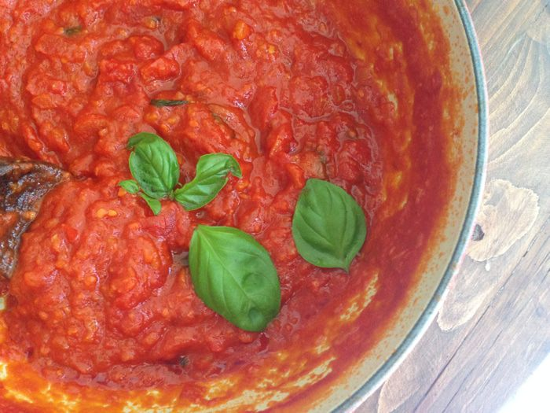

Home
Classic Arrabbiata Sauce
Ingredients
-
olive oil
-
chopped onion
-
garlic cloves
-
red wine
-
caster sugar
-
fresh basil
-
crushed chillies
-
tomato puree
-
lemon juice
-
Italian herb seasoning
-
black pepper
-
400g chopped tomatoes
-
chopped fresh parsley

Directions
1.
Heat oil in a large frying pan over medium heat.
2.
Saute onion and garlic in oil for 5 minutes.
3.
Stir in wine, sugar, basil, crushed chillies, tomato puree, lemon juice, Italian herb seasoning, black pepper and tomatoes; bring to the boil.
4.
Reduce heat to medium and simmer uncovered about 15 minutes.
5.
Stir in parsley.
6.
Ladle over the hot cooked pasta of your choice.